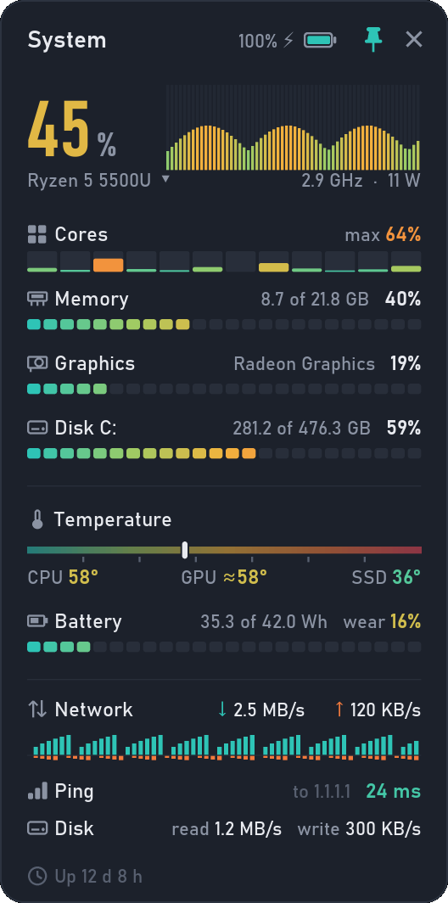

PC Monitor
Your PC's load, temperatures and FPS — on the desktop, on the taskbar and over your game.
Windows 10 and 11. Free and open source. Updates install in one click from the widget.
New in 1.7: drag the widget into any shape — wide, it lays its readings out in two or three columns. Click any row for its history. All changes


22:57
21.11.2026
21.11.2026